Unit · Video walkthrough
Review deployment time and save a draft note
Review an existing deployment time draft, save and reopen one explanatory note, compare report scopes, and recognize expense, usage and F-42 review boundaries.
Before you begin
- An authorized Unit session with Deployments enabled and access to the intended deployment.
- A permitted crew or personnel scope with an existing editable practice draft.
- Permission to save the intended subject note and an understanding of your department time-report, expense and signature process.
Chapters
- Find the intended deployment
- Confirm the date, scope and existing draft
- Read the existing time entries
- Edit a note on the correct row
- Save the draft entries
- Read warnings and reopen the saved value
- Compare personal and deployment scopes
- Recognize the expense form without posting
- Review usage fields and display units
- Read the existing F-42 review state
- Use the same draft discipline across services
Watch the walkthrough
Step 1
Find the intended deployment
In Unit, open Deployments and use Open to review active assignments. This example opens TRAINING ONLY, Academy field operations. Read the deployment name and reference before continuing, especially when several crews share a vehicle. A fire or EMS crew can use this workspace to organize a deployment; the information shown here belongs to a fictional software exercise.

Practice
Identify the intended training deployment by its name and reference before opening it.
Step 2
Confirm the date, scope and existing draft
Inside the deployment, the Time tab shows the Date, the selected crew, and Reports this day. Here, the displayed date is October twenty-sixth and the Engine Fifty-One crew already has a Draft report. Read that existing report before starting another one. Its deployment roster is separate from the apparatus staffing seats used for incident response.
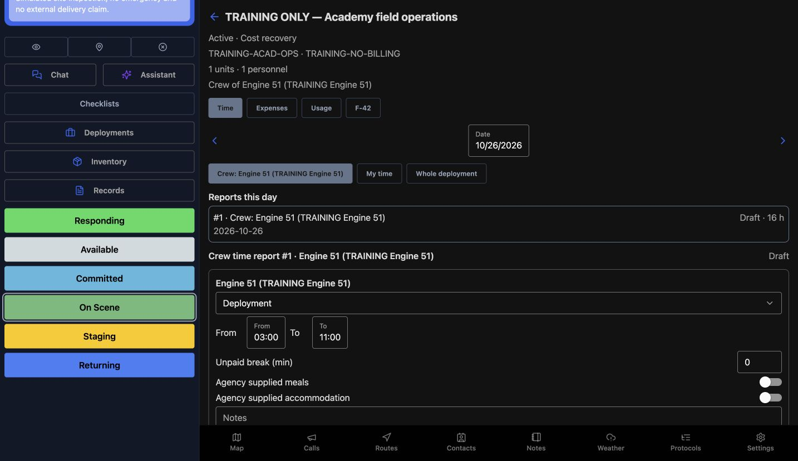
Practice
Read the displayed date and crew scope, and identify the existing Draft without creating another report.
Step 3
Read the existing time entries
Scroll through the existing entries and compare the From and To values, Unpaid break, and agency supplied meals and accommodation. The summary shows eight hours for the unit and eight for Boden, totaling sixteen hours across subjects. These are existing training values. Apply to crew and Add entry are separate editing choices; we leave the time entries and allowances as they are.
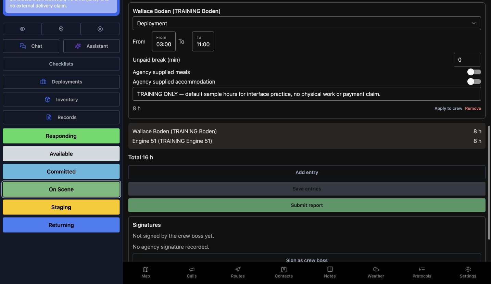
Practice
Compare each existing subject row with the total; inspect the controls without changing time, breaks or allowances.
Step 4
Edit a note on the correct row
In the Engine Fifty-One row, use the note field beneath the allowance switches. The example note identifies this as a training walkthrough and says it makes no actual hours, work, expense, or payment claim. Check the subject name before typing: a unit note and a personnel note belong to different entries. This edit changes the unit note while preserving the other displayed values.
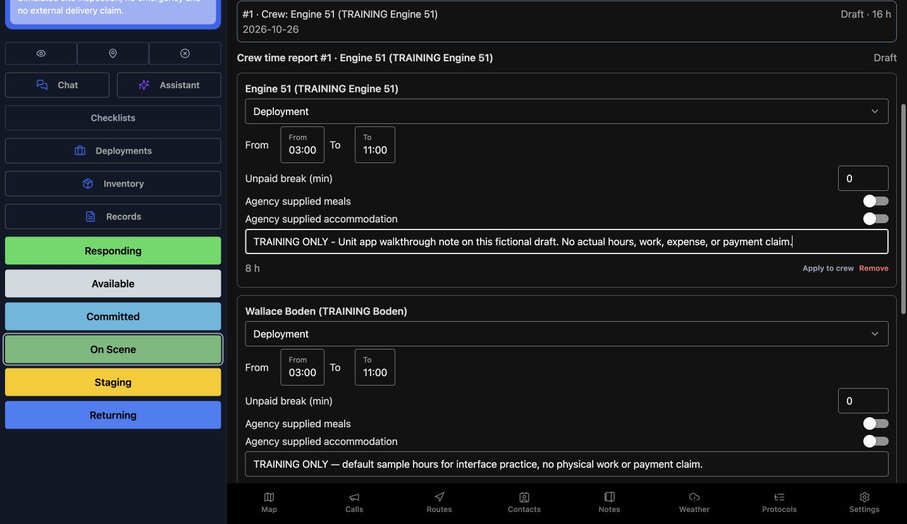
Practice
In an authorized practice draft, identify the correct subject row before preparing a clearly fictional note.
Step 5
Save the draft entries
Scroll below the entries and choose Save entries to store the note. Submit report is a different action, and the Signatures section still says that the crew boss has not signed and no agency signature is recorded. Saving an explanatory draft note does not submit the report or provide an attestation. Keep those later actions separate when reviewing a practice draft.
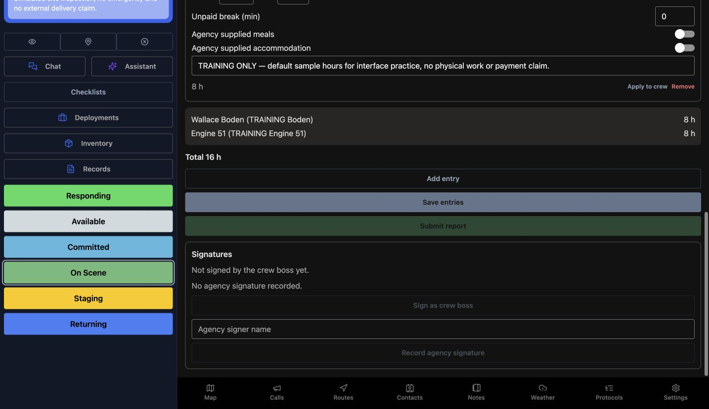
Practice
Save only the intended note change; leave submission and signatures untouched.
Step 6
Read warnings and reopen the saved value
After saving, this draft shows a long-shift warning for each subject because no break is recorded. Read these warnings before treating a report as complete; this example does not resolve them. Reopening the draft shows the same training note in the Engine Fifty-One row. That readback verifies the stored note, while the report remains Draft and the existing time values remain visible.
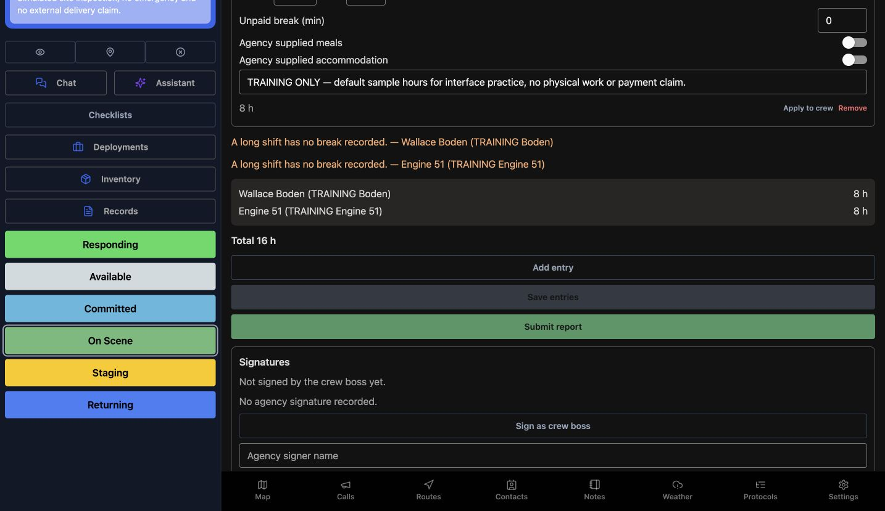
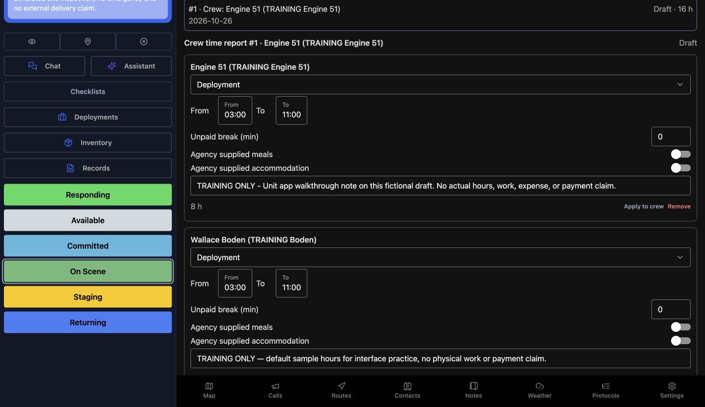
Practice
Read the warnings, then reopen the draft and compare the saved note. Include unresolved warnings in your handover.
Step 7
Compare personal and deployment scopes
On Time, My time displays a message that this time is already on report number one. Use that reference to find existing coverage instead of creating duplicate time. Whole deployment shows a separate scope with Start time report. That button would start another report; it is not an automatic total of every crew. In this review, we inspect the scope and leave the button untouched.
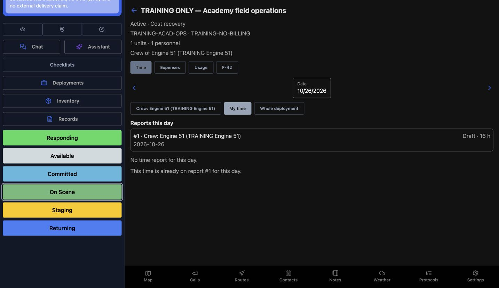
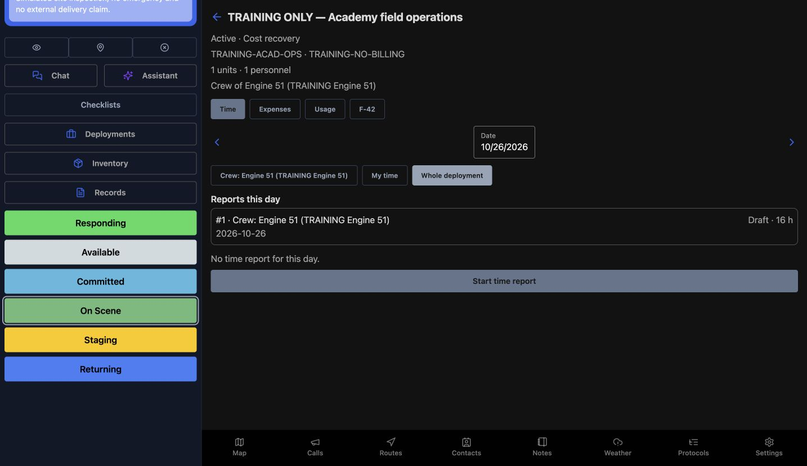
Practice
Compare scope messages and locate the existing report without starting another one.
Step 8
Recognize the expense form without posting
The Expenses tab shows an empty day and a New expense form. The visible fields are Amount in U.S. dollars, Description, and City, with Fuel selected as the expense type. Take photo and Choose photo are attachment choices. We inspect these controls without opening a camera or adding an expense. A receipt, reimbursement, or payment is not demonstrated by an empty form.
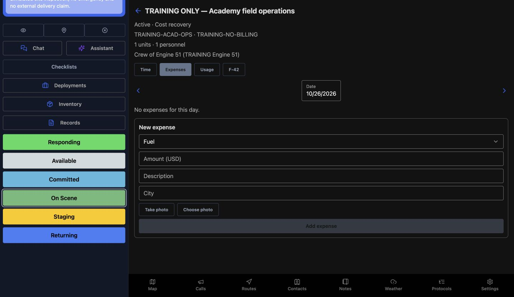
Practice
Identify the expense fields and attachment choices; leave this training form empty and do not post a financial entry.
Step 9
Review usage fields and display units
In Usage, confirm the selected resource and phase before reading Start odometer, End odometer, Engine hours, and Fuel. The first view shows miles and gallons. The unit controls can switch the empty form to kilometers and liters. This demonstrates the displayed unit choices, without recording a reading or converting measured quantities. Add reading remains separate from reviewing the form.
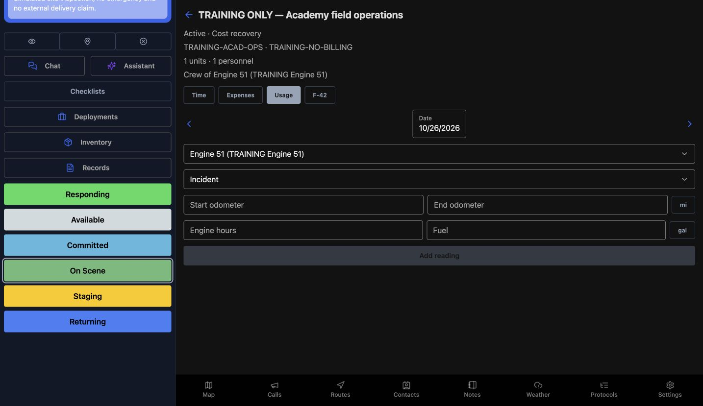
Practice
Switch between the displayed distance and fuel units, then leave the blank readings unchanged.
Step 10
Read the existing F-42 review state
On F-42, this existing item says Needs Review, with eight errors and two warnings. Validate and Draft F-42 from time reports are available actions, but neither is performed in this review. The page explains that the draft uses submitted time reports and submission remains a manual, audited step on the web. An item with errors is not evidence of successful validation or portal acceptance.
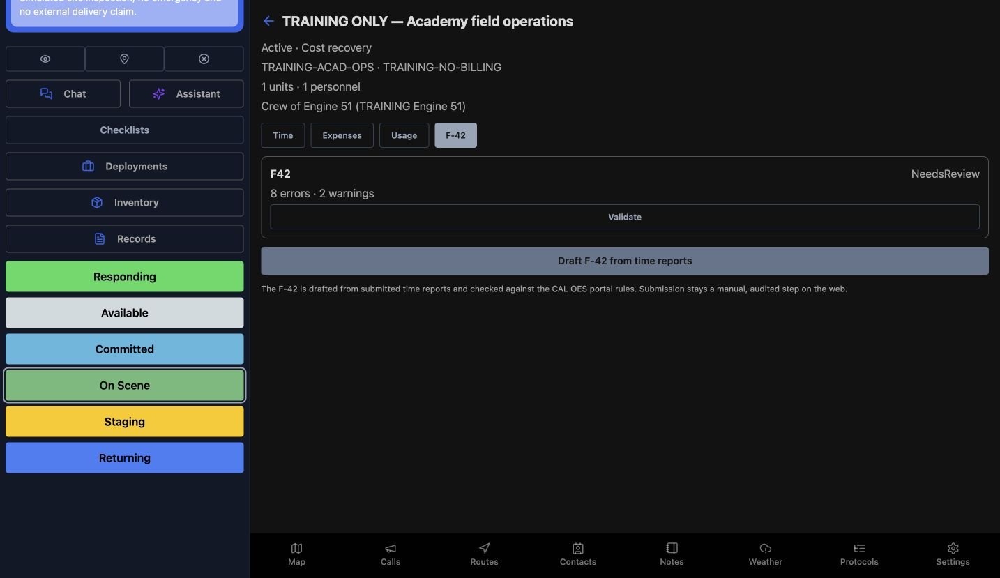
Practice
Read NeedsReview and the error and warning counts. Locate Validate and Draft F-42 from time reports, and follow your department process before using either.
Step 11
Use the same draft discipline across services
Return to the stored Draft note and use this same review discipline in other services. Community care teams can clarify a support assignment; search and rescue or security teams can explain a shift entry. Wildland and industrial response crews can distinguish equipment time from personnel time. In each case, choose the correct subject and preserve the difference between a saved explanation, submitted work, and an authorized signature.
Practice
Explain a deployment-note example for your service and identify which later actions require a separate authorized workflow.
Examples for your department
- Fire / EMS
- A mutual-aid engine or ambulance crew reviews a deployment draft.
- Community response
- A mobile community care team documents context for a support assignment.
- Search and rescue
- A search crew reviews a deployment containing vehicle and personnel time.
- Security
- A security patrol supervisor reviews a temporary support deployment.
- Wildland
- A wildland crew reviews an existing cost-recovery workspace.
- Industrial
- An industrial response team documents a training deployment.
Transcript
Download transcriptRead the complete transcript
Review deployment time and save a draft note Audience: Authorized Unit operators and deployment crew members reviewing their permitted time-report scope. Find the intended deployment In Unit, open Deployments and use Open to review active assignments. This example opens TRAINING ONLY, Academy field operations. Read the deployment name and reference before continuing, especially when several crews share a vehicle. A fire or EMS crew can use this workspace to organize a deployment; the information shown here belongs to a fictional software exercise. Practice: Identify the intended training deployment by its name and reference before opening it. Confirm the date, scope and existing draft Inside the deployment, the Time tab shows the Date, the selected crew, and Reports this day. Here, the displayed date is October twenty-sixth and the Engine Fifty-One crew already has a Draft report. Read that existing report before starting another one. Its deployment roster is separate from the apparatus staffing seats used for incident response. Practice: Read the displayed date and crew scope, and identify the existing Draft without creating another report. Read the existing time entries Scroll through the existing entries and compare the From and To values, Unpaid break, and agency supplied meals and accommodation. The summary shows eight hours for the unit and eight for Boden, totaling sixteen hours across subjects. These are existing training values. Apply to crew and Add entry are separate editing choices; we leave the time entries and allowances as they are. Practice: Compare each existing subject row with the total; inspect the controls without changing time, breaks or allowances. Edit a note on the correct row In the Engine Fifty-One row, use the note field beneath the allowance switches. The example note identifies this as a training walkthrough and says it makes no actual hours, work, expense, or payment claim. Check the subject name before typing: a unit note and a personnel note belong to different entries. This edit changes the unit note while preserving the other displayed values. Practice: In an authorized practice draft, identify the correct subject row before preparing a clearly fictional note. Save the draft entries Scroll below the entries and choose Save entries to store the note. Submit report is a different action, and the Signatures section still says that the crew boss has not signed and no agency signature is recorded. Saving an explanatory draft note does not submit the report or provide an attestation. Keep those later actions separate when reviewing a practice draft. Practice: Save only the intended note change; leave submission and signatures untouched. Read warnings and reopen the saved value After saving, this draft shows a long-shift warning for each subject because no break is recorded. Read these warnings before treating a report as complete; this example does not resolve them. Reopening the draft shows the same training note in the Engine Fifty-One row. That readback verifies the stored note, while the report remains Draft and the existing time values remain visible. Practice: Read the warnings, then reopen the draft and compare the saved note. Include unresolved warnings in your handover. Compare personal and deployment scopes On Time, My time displays a message that this time is already on report number one. Use that reference to find existing coverage instead of creating duplicate time. Whole deployment shows a separate scope with Start time report. That button would start another report; it is not an automatic total of every crew. In this review, we inspect the scope and leave the button untouched. Practice: Compare scope messages and locate the existing report without starting another one. Recognize the expense form without posting The Expenses tab shows an empty day and a New expense form. The visible fields are Amount in U.S. dollars, Description, and City, with Fuel selected as the expense type. Take photo and Choose photo are attachment choices. We inspect these controls without opening a camera or adding an expense. A receipt, reimbursement, or payment is not demonstrated by an empty form. Practice: Identify the expense fields and attachment choices; leave this training form empty and do not post a financial entry. Review usage fields and display units In Usage, confirm the selected resource and phase before reading Start odometer, End odometer, Engine hours, and Fuel. The first view shows miles and gallons. The unit controls can switch the empty form to kilometers and liters. This demonstrates the displayed unit choices, without recording a reading or converting measured quantities. Add reading remains separate from reviewing the form. Practice: Switch between the displayed distance and fuel units, then leave the blank readings unchanged. Read the existing F-42 review state On F-42, this existing item says Needs Review, with eight errors and two warnings. Validate and Draft F-42 from time reports are available actions, but neither is performed in this review. The page explains that the draft uses submitted time reports and submission remains a manual, audited step on the web. An item with errors is not evidence of successful validation or portal acceptance. Practice: Read NeedsReview and the error and warning counts. Locate Validate and Draft F-42 from time reports, and follow your department process before using either. Use the same draft discipline across services Return to the stored Draft note and use this same review discipline in other services. Community care teams can clarify a support assignment; search and rescue or security teams can explain a shift entry. Wildland and industrial response crews can distinguish equipment time from personnel time. In each case, choose the correct subject and preserve the difference between a saved explanation, submitted work, and an authorized signature. Practice: Explain a deployment-note example for your service and identify which later actions require a separate authorized workflow. Examples for your department Fire / EMS: A mutual-aid engine or ambulance crew reviews a deployment draft. Community response: A mobile community care team documents context for a support assignment. Search and rescue: A search crew reviews a deployment containing vehicle and personnel time. Security: A security patrol supervisor reviews a temporary support deployment. Wildland: A wildland crew reviews an existing cost-recovery workspace. Industrial: An industrial response team documents a training deployment.